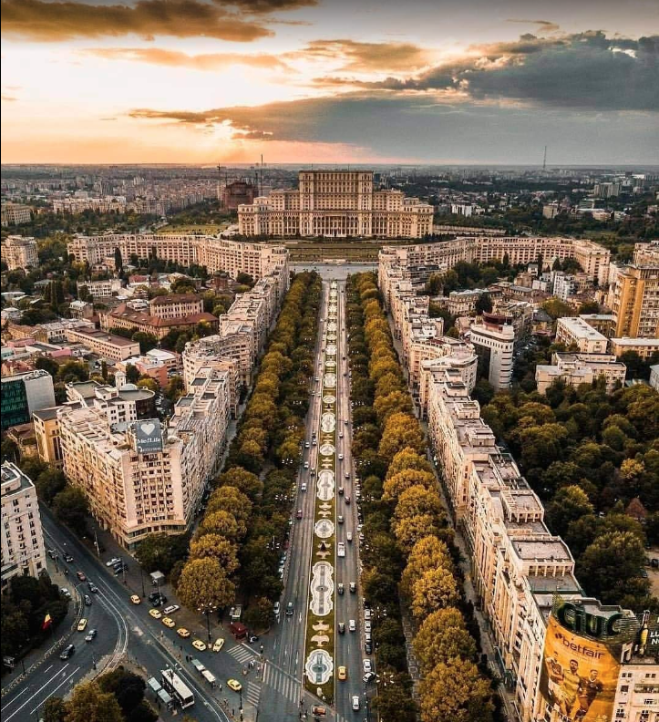
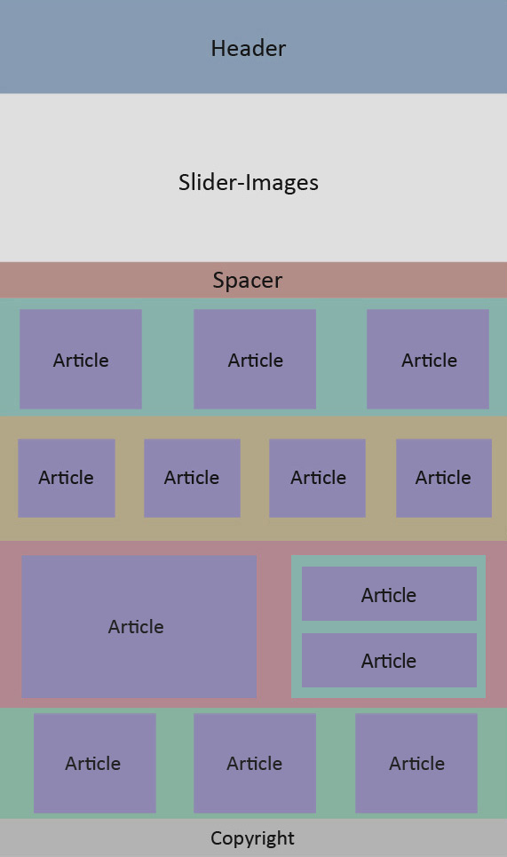

Imagini
 
Audio
Acest brouwser nu suporta. Verifica aici :https://caniuse.com/audio
Video Exemplul
Acest brouwser nu suporta. Verifica aici :https://caniuse.com/?search=video
Video Y
Video Youtube
google maps on webpage